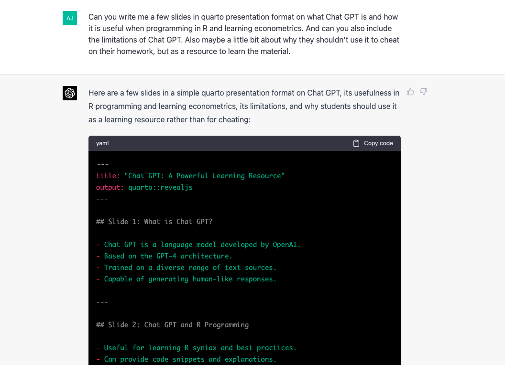

Introduction and Overview
EC 320, Set 01
Spring 2023
Prologue
Motivation
What is the goal of econometrics?
To learn about the world using data.
Why do economists (and others) study econometrics?
Providing answers to important problems.
Ex.
- Do minimum wage policies reduce poverty?
- Does the death penalty deter violent crime?
- How will global warming affect the economy?
- How responsive are polluter to a carbon tax?
- What explains the gender pay gap?
- Are recessions good for your health?
- Can we forecast the next recession?
Motivation
What is the goal of econometrics?
To learn about the world using data.
Why do economists (and others) study econometrics?
Providing answers to important problems.
How do you pronounce it?
Motivation
Why should you study econometrics?
Develop skills and learn to use tools that are valued by employers.
Cultivate a healthy sense of skepticism
IMO1, of all the courses in a typical economics major, econometrics is the most translatable to a job
- Data is the new oil
- Extracting meaningful analysis from big data is a sought after skill in the job market of 2023
Motivation
Why should you study econometrics?
Throughout this course, I will try my best to emphasize why:
- Why are we learning this?
- Why does this matter with regard to future econometrics courses?
- Why is fill in the blank important for answering important problems?
- Why does this matter to employers?
Econometrics is built on crucial fundamentals. These fundamentals is the focus of this class.
uk · kaa · nuh · meh · truhks
Most econometric inquiry concerns one of two distinct goals:
- Prediction: Accurately predict or forecast an outcome given a set of predictors. Given what we know about \(x\), what values do we expect \(y\) to take?
- Causal identification: Estimate the effect of an intervention on an outcome. How does \(y\) change when we change \(x\)?
In this class, and in EC 421, we will focus on the later. The former is the focus of EC 422 and EC 524
Causal identification
Causal identification
Common refrain.1
“Correlation does not necessarily imply causation.”
Why might correlation fail to describe a causal relationship?
- Omitted-variables bias
- Selection bias
- Simultaneity
- Reverse causality
- Coincidence
Causal identification
Common refrain.1
“Correlation does not necessarily imply causation.”
Correlation may imply causation if we assume “all else equals”
- Hold everything fixed
This assumption is fragile in the real world.
Solutions:
- Conduct experiments
- Find a natural experiment
Do you think this is a causal statement?
Experiments
How can we ensure the all else equals assumption holds?
Randomization
Randomized Controlled Trails (RCT)
- widely used across many scientific disciplines1
- often touted as the gold standard of causal identification
- use randomization to ensure all else equals
In 2019, the Nobel Prize winners adapting RCTs to projects in development economics2
Experiments Ex.
Research question
Does health insurance improve health?
The all else equals assumption would require:
- all preexisting correlates with health must be the same across insured and uninsured
What would violate this assumption?
If more money is correlated with better health, and the average income of those who buy health insurance is higher, then we violate this assumption
Experiments Ex.
But what if health insurance is randomly assigned?
- Then, assuming the assignment is perfectly random across a large enough sample size, this assumption becomes much more palatable
Oregon Health Insurance Experiment
The Oregon Health Insurance Experiment is a landmark study of the effect of expanding public health insurance on health care use, health outcomes, financial strain, and well-being of low-income adults… In 2008, the state of Oregon drew names by lottery for its Medicaid program for low-income, uninsured adults, generating just such an opportunity. This ongoing analysis represents a collaborative effort between researchers and the state of Oregon to learn about the costs and benefits of expanding public health insurance.
Natural experiments
An external, non-experimental factor creates circumstances that resemble a controlled experiment
Real-world events provide opportunity to compare similar groups
With some assumptions, researchers infer the causal relationships examining differences in outcomes between groups
Natural experiments
Any examples of natural experiments that come to mind?
Here are some of the more famous ones:
- Vietnam draft lottery
- The Mariel Boatlift
- Divorce Law Reforms
- The Opening of the London Congestion Charge
In more recent news:

Natural experiments Ex.
Green paradox
An outcome in which climate policies instead have the opposite effect.
Ex. Carbon taxes: A carbon tax is announced to start at sometime in the future—aimed at reducing carbon emissions
However, for a short amount of time, emissions increase… Why? Theory dictates:
- If firms are informed of the policy, they will expect the price of pollution to increase in the future.
- Thus, they have incentive to pollute more now
Natural experiments Ex.
Blue paradox
- Recent study by Grant McDermott and coauthors.
Question: Do commercial fishers preempt fishing bans by increasing their fishing effort before the bans go into effect?
Motivation:
- Recent conservation seek to preserve habitat and increase fish stocks.
- Policy lever: Restrict fishing activity in marine protected areas.
- Concern: Preemptive behavior could decrease fish stocks.
Data: Vessel-level data on fishing effort/intensity.
Natural experiments Ex.
Blue paradox
Setting
Phoenix Islands Protected Area (PIPA)
- Policy announcement on September 1, 2014
- Implemented 1 January 2015.
- Treatment group: PIPA.
- Control group: Outlying Kiribati islands.
Natural experiments Ex.
Blue paradox
Result

Natural experiments Ex.
Blue paradox
Identification strategy: Differences-in-differences
Measure the causal effect of the fishing ban by comparing fishing effort in treatment and control regions, before-and-after PIPA.
Parallel trends assumption.
“Define a control region that plausibly exhibits the same trends in fishing effort over PIPA, had the marine reserve never been implemented or anticipated.”
Believing this assumption is key to a causal interpretation
Natural experiments Ex.
Blue paradox
Result

Natural experiments Ex.
Blue paradox
Discussion
Results provide causal evidence that commercial fishers engage in preemptive behavior in response to conservation policy changes.
Results are consistent with economic theory, but cannot prove that the theory is correct.
- Science cannot prove anything.
- Science can falsify or reject existing hypotheses or corroborate existing evidence.
Natural experiments Ex.
Blue paradox
Furthermore, the causal statement rests on a critical assumption.
- Cannot prove that the assumption is true, but can falsify it.
- Failure to falsify \(\neq\) assumption is true.
EC 320
In EC 320
We start to build up the fundamentals of causal analysis
But first we need to build up the necessary Theory, Tools, and Skills
This course will focus almost exclusively on a particular method that is common in statistics in general:
- Ordinary Least Squares (OLS) (aka linear regression)
Coursework
Rough weekly outline:
- 01: Introduction and review
- 02: The econometric problem
- 03: SLR estimation
- 04: SLR assumption
- 05: SLR inference
- 06: Midterm
- 07: MLR estimate and inference
- 08: Transformations
- 09: Quantitative variables
- 10: Exogeniety and final review
Final: Tuesday, June 13 @ 2:45
Syllabus
Course site
I use GitHub to host a separate site with all the course materials
You can find a link to it here or on the Canvas homepage
I use it because:
- it is convenient for me to post slides
- it allows me to post class materials on my website
- acts as a secondary site in case Canvas poops out
EVERYTHING will be posted to both Canvas and GitHub except one thing… the slides
All zoom records will only be available on Canvas
About me
Please call me Andrew
- Office: PLC 523
- Office hours: T & Th 4:00p-5:00p
- Email: adickin3@uoregon.edu
> Metrics
- I love studying econometrics
- My first time teaching EC 320
- TA’d: EC 421 (x2), EC 422/522, EC 423/523, EC 424/524
- Instructed: EC 330 (x3)
About me
Please call me Andrew
- Office: PLC 523
- Office hours: T & Th 4:00p-5:00p
- Email: adickin3@uoregon.edu
> Grad school
- 4th year Econ PhD student
- Applied topics related to environmental economics
- Causal inference, statistical learning, and data science
- Current focus on air pollution
About me
Please call me Andrew
- Office: PLC 523
- Office hours: T & Th 4:00p-5:00p
- Email: adickin3@uoregon.edu
> Before grad school
- Grew up in San Diego, CA
- Spent childhood/undergrad summers in the San Juan Islands
- Studied economics and math at San Diego State University
- Prior to PhD, researched crime and immigration topics
In EC 320
An applied econometrician1 needs a solid grasp on (at least) three areas:
- The underlying theory (assumptions, strengths, weaknesses).
- An ability to load, aggregating, joining, visualizing large datasets.
- Applying the theoretical methods to actual data.
This course aims to deepen your knowledge in each of these three areas.
- 1: Analytical skills (Math)
- 2-3: Computational tools (R)
R
What is R?
To quote the R project website1
R is a free software environment for statistical computing and graphics. It compiles and runs on a wide variety of UNIX platforms, Windows and MacOS.
What does that mean?
[R] was created for the statistical and graphical work required by econometrics–written by statistical programmers
R has a vibrant, thriving online community. (stack overflow)
Plus it’s free and open source.
Why are we using R?
1. R is free and open source—saving both you and the university money.
2. Related: Outside of a small group of economists, private- and public-sector employers favor R over Stata and most competing softwares.
3. R is very flexible and powerful—adaptable to nearly any task, e.g., ’metrics, spatial data analysis, machine learning, web scraping, data cleaning, website building, teaching. I write all my slides, problem sets, and exams in R.
Why are we using R?
4. Related: R imposes no artificial restrictions on your amount of observations, variables, memory, or processing power.
5. If you put in the work,1 you will come away with a valuable and marketable tool.
6. I üíñ R
Getting started with R
R setup for EC 320
Installation
You need to install 2 pieces of software:
For explicit instructions for how to install, follow this tutorial
Note: R/Rstudio installations differ by operating system
R setup for EC 320
R v. Rstudio
- The programming language (ie english, spanish, french etc.)
- Ex. The engine, chassis, wheels, etc. of a car
- The Integrated Development Environment (IDE) (ie word processor)
- Ex. The dashboard containing various buttons and monitors
R works without Rstudio, but Rstudio doesn’t work without R
R basics
You will dive deeper into R in lab, but here six big points about R:
Everything is an object.
Every object has a name and value.
You use functions on these objects.
Functions come in libraries (packages)
R will try to help you.
R has its quirks.
foo
foo <- 2
mean(foo)
library(dplyr)
?dplyr
NA; error; warning
Chat GPT
What is Chat GPT?
- Chat GPT is a language model developed by OpenAI.
- Based on the GPT-4 architecture.
- Trained on a diverse range of text sources.
- Capable of generating human-like responses.
Chat GPT and R Programming
- Useful for learning R syntax and best practices.
- Can provide code snippets and explanations.
- Helps in debugging and troubleshooting.
- Offers suggestions for data manipulation and analysis.
Chat GPT and Econometrics
- Assists with understanding econometric concepts.
- Provides examples of natural experiments and regression models.
- Explains various estimation methods and their assumptions.
- Helps with interpreting results and understanding their implications.
Limitations of Chat GPT
- Knowledge cutoff: September 2021.
- May not have the latest information on specific topics.
- Potential for generating incorrect or outdated information.
- Can sometimes provide verbose or irrelevant responses.
Chat GPT as a Learning Resource, Not for Cheating
- Use Chat GPT to deepen your understanding of the material.
- Cheating undermines your education and future success.
- Developing problem-solving skills is essential for long-term career growth.
- Engage with Chat GPT to clarify concepts, not to complete assignments.
Tips for Using Chat GPT Effectively
- Ask specific, well-defined questions.
- Always verify information provided by Chat GPT.
- Use multiple resources to cross-check and validate answers.
- Remember that Chat GPT is a tool to enhance your learning experience, not replace it.
Conclusion*
- Chat GPT can be a valuable resource for learning R programming and econometrics.
- Be aware of its limitations and always double-check the information provided.
- Use Chat GPT as a learning aid and not for cheating on assignments.
- Embrace the opportunity to develop problem-solving skills and deepen your understanding of the material.
Chat GPT
The previous 7 slides were all written by Chat GPT

GPT conclusion (written by me)
Chat GPT is a breathtaking piece of technology
But it is also frightening. This tech has and will continue to disrupt education
It has changed my day to day workflow already.
Use it wisely. Don’t cheat with it. But use it to help your understanding.
Next class: Statistics review
EC320, Set 01 | Introduction and Overview